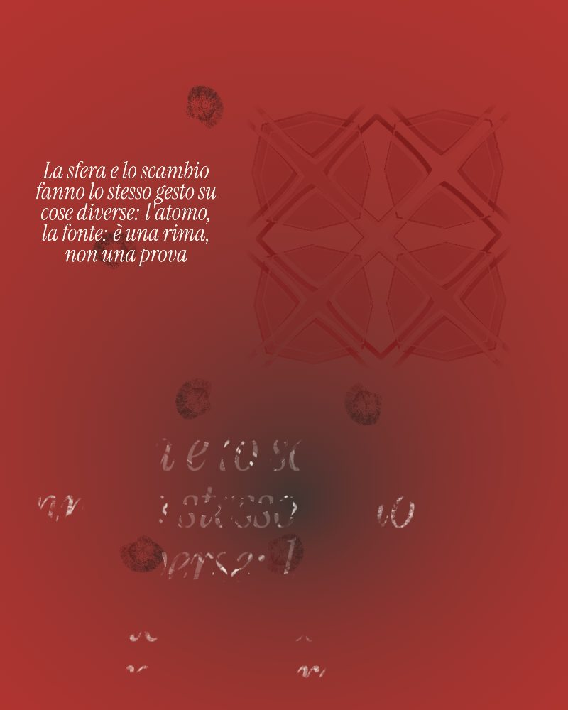
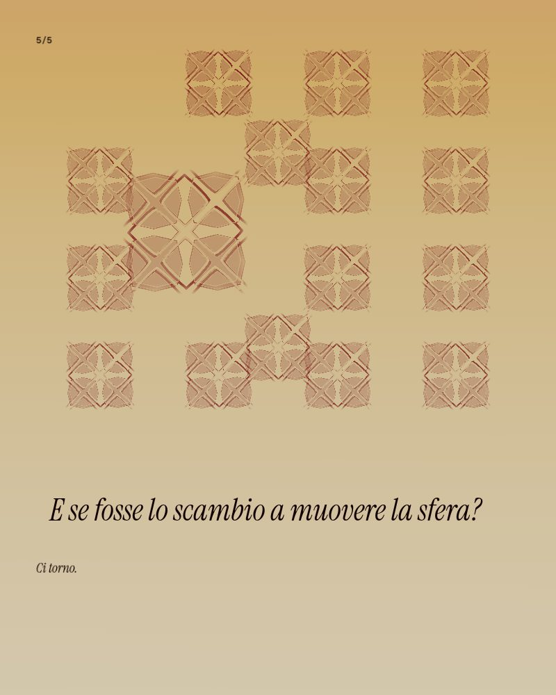

La sfera e lo scambio fanno lo stesso gesto su cose diverse

1/5 · La sfera e lo scambio fanno lo stesso gesto su cose diverse: l'atomo, la fonte: è una rima, non una prova

2/5 · Da dove viene?
Smonto la frase nei pezzi che la reggono.

3/5 · Lo scambio rappresenta la fonte del catalogo

4/5 · La sfera rappresenta l'atomo nella funzione
Quindi l'atomo non viene dal nulla: dietro c'è la sfera. (Modello ad asta e sfera)

5/5 · E se fosse lo scambio a muovere la sfera?
Ci torno.
A guardarle insieme, la sfera e lo scambio fanno lo stesso gesto su cose diverse: l'atomo, la fonte: è una rima, non una prova
e se fosse lo scambio a muovere la sfera?